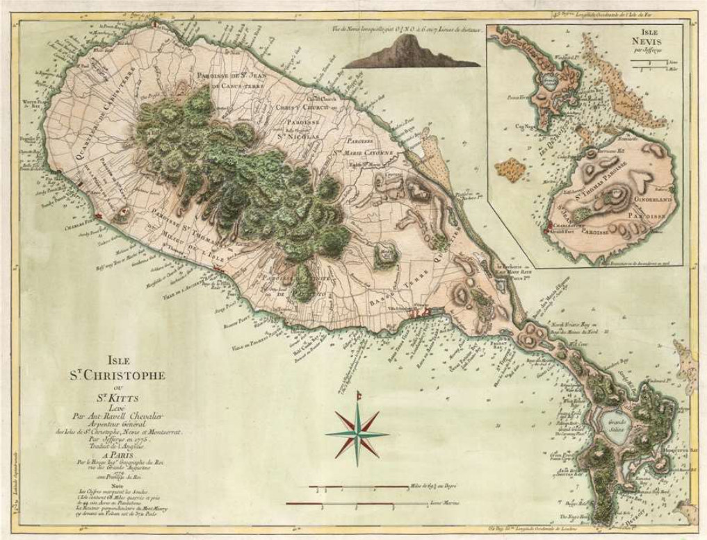
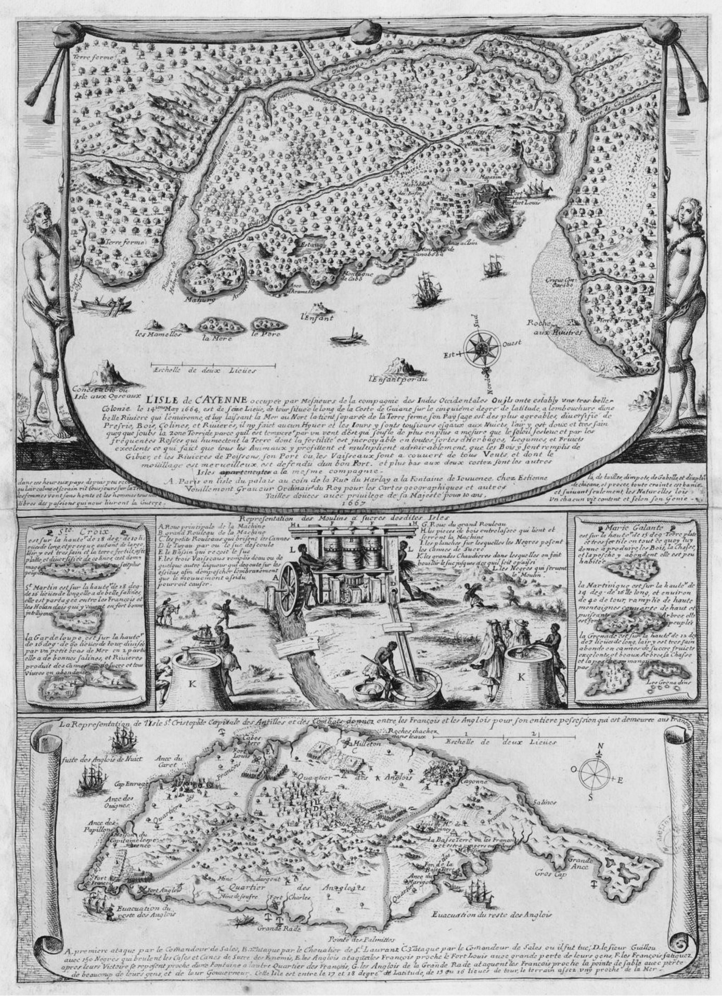

02 Sweet and Speed
식민지 지도 제작 (Colonial Cartography)
1
지도가 아니라 ‘자본의 장부(Ledger)’이다
땅을 m 단위로 쪼개어 소유했다 — 숫자는 면적, 이름은 소유자
2
‘보잘것없는 섬’은 없다, ‘이익이 없는 섬’이 있을 뿐
Waste 는 쓸모없는 땅이 아니라 — 경작지가 아닌 땅
3
지도의 정치학: “무엇을 그리고, 무엇을 지웠나”
이 지도는 지리학자가 그린 것이 아니다 — 효율적 경제가 그린 것이다
땅을 m 단위로 쪼개어 소유했지만, 그 땅 위에서 일하던
수만 명의 사람들은 점(Dot)
이다.
보건학자는 무엇을 그려야 할까요?
1779 Jefferys / Le Rouge Map of St. Kitts and Nevis